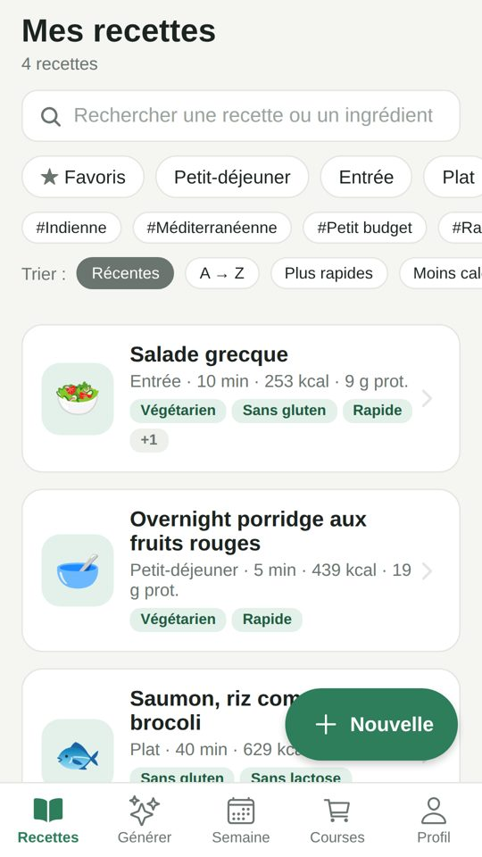
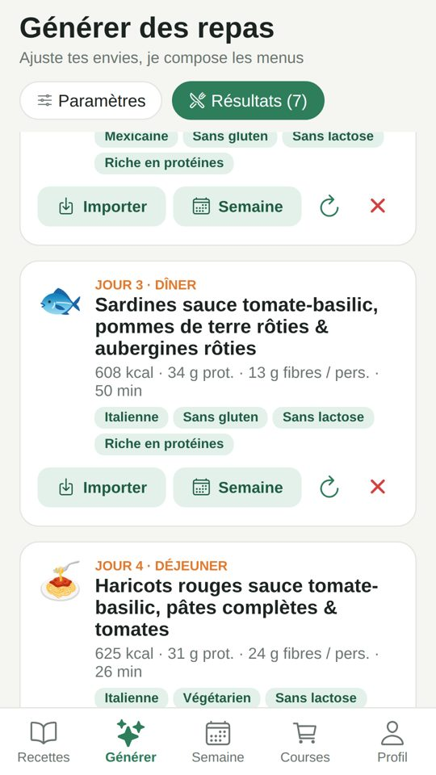
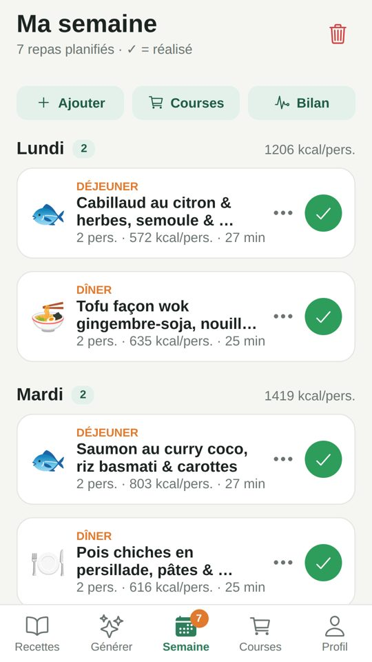

Tes recettes, des menus équilibrés et ta liste de courses.
Mes Repas regroupe tes recettes, compose des menus adaptés à ton régime et t'indique ce qu'il manque dans tes apports nutritionnels, avec une solution.
Bientôt sur Google Play



Recettes modifiables
Ingrédients, étapes, temps, portions, étiquettes : tout se modifie. Les valeurs nutritionnelles sont calculées avec la table Ciqual de l'ANSES.
Menus sur mesure
Régime, allergies, budget, cuisines du monde : l'appli compose tes repas, en mode simple hors ligne ou avec Claude (IA).
Bilan nutritionnel
Calories, protéines, fibres, fer, calcium, vitamine C… Ce qui manque, et comment le compléter.
Semaine et courses
Planifie tes repas par jour, coche-les une fois cuisinés : la liste de courses se remplit toute seule.
La génération par intelligence artificielle utilise la clé API Claude personnelle de l'utilisateur (compte Anthropic). Un mode simple, gratuit et hors ligne, est toujours disponible.
Contact
Une question, un bug, une suggestion : mes-repas.app@outlook.fr